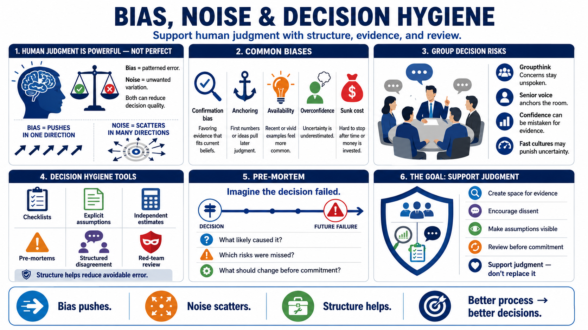

Bias, Noise, and Decision Hygiene
Connecting to LMS... Progress: in progress

Narration
Human judgment is powerful, but it is not perfectly consistent. Cognitive biases are predictable tendencies that can influence reasoning. Noise is unwanted variation in judgments that should be consistent. Bias pushes judgment in a pattern. Noise makes judgment scatter. Both can damage decision quality, especially when teams assume that experience alone makes their conclusions reliable.
Confirmation bias leads people to favor evidence that supports what they already believe. Anchoring makes the first number, idea, or proposal exert too much influence. Availability makes recent or vivid examples feel more common than they are. Overconfidence makes people underestimate uncertainty. Sunk cost makes it hard to stop investing in a weak path because time, money, or reputation has already been committed.
Group settings create additional risk. Groupthink can make people suppress concerns to preserve harmony or avoid conflict. A senior person can unintentionally anchor the room. A team can confuse confidence with evidence. A fast-moving culture can reward decisive language while quietly punishing uncertainty. Decision hygiene is the set of habits that helps reduce these avoidable errors.
Useful practices include checklists, explicit assumptions, independent estimates, pre-mortems, red-team review at a high level, and structured disagreement. A pre-mortem imagines that the decision failed in the future and asks what likely caused the failure. This makes it easier to surface risks before commitment, when the team can still change the plan.
Decision hygiene does not assume perfect rationality. It assumes people are busy, social, emotional, and operating under pressure. Structure helps judgment. It creates space for evidence, dissent, and review without requiring everyone to become detached or flawless. The point is not to remove human judgment, but to support it.